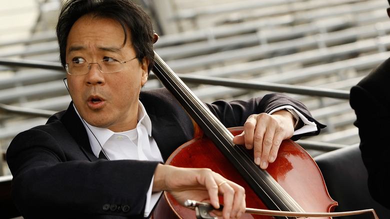

Augustin Hadelich
Augustin Hadelich is a Grammy Award-winning violinist renowned for his virtuosic technique and profound musicality. Born in Italy to German parents in 1984, Hadelich began playing the violin at the age of five and quickly demonstrated exceptional talent. He studied at the Juilliard School in New York and has since emerged as one of the leading violinists of his generation.
Hadelich's performances are celebrated for their exquisite tone and emotional depth. He has collaborated with major orchestras worldwide and is particularly recognized for his interpretations of Romantic and contemporary repertoire. His recording of Dutilleux's Violin Concerto won a Grammy Award in 2016, further solidifying his reputation as a masterful musician.
Joshua Bell
Joshua Bell is an American violinist whose captivating performances have captivated audiences worldwide. Born in 1967 in Bloomington, Indiana, Bell showed prodigious talent from an early age and made his orchestral debut at fourteen. He later studied at the Indiana University Jacobs School of Music under renowned violinist Josef Gingold.
Bell is celebrated for his technical brilliance, warm tone, and interpretative depth. He has performed with leading orchestras and conductors and is equally at home in classical and crossover repertoire. Bell's recording of the Tchaikovsky Violin Concerto remains one of the best-selling classical recordings of all time.
Beyond his musical achievements, Bell is known for his curiosity and innovation, exploring new avenues to reach wider audiences. He is the recipient of numerous awards, including Grammy Awards, and serves as the Music Director of the Academy of St Martin in the Fields.
Yo-Yo Ma
As we got further and further away, it [the Earth] diminished in size. Finally it shrank to the size of a marble, the most beautiful you can imagine. That beautiful, warm, living object looked so fragile, so delicate, that if you touched it with a finger it would crumble and fall apart. Seeing this has to change a man.
 Yo-Yo Ma: One of the most renowned cellists of all timeYo-Yo Ma is a world-renowned cellist whose artistry transcends boundaries of genre and culture. Born in Paris in 1955 to Chinese parents, Ma began studying cello at the age of four. His family moved to the United States when he was seven, where he continued his musical education.
Ma's playing is characterized by its technical brilliance, emotional depth, and commitment to exploring the universal language of music. He has collaborated with leading orchestras, conductors, and musicians across genres, from classical to jazz and world music. Ma is particularly known for his interpretations of the Bach Cello Suites, which he has recorded multiple times.
In addition to his performance career, Ma is a passionate advocate for the arts and social causes. He founded the Silk Road Ensemble, which seeks to connect cultures through music, and actively promotes arts education initiatives. Ma has received numerous awards, including multiple Grammy Awards and the Presidential Medal of Freedom, and continues to inspire audiences around the globe with his artistry and humanitarian efforts.